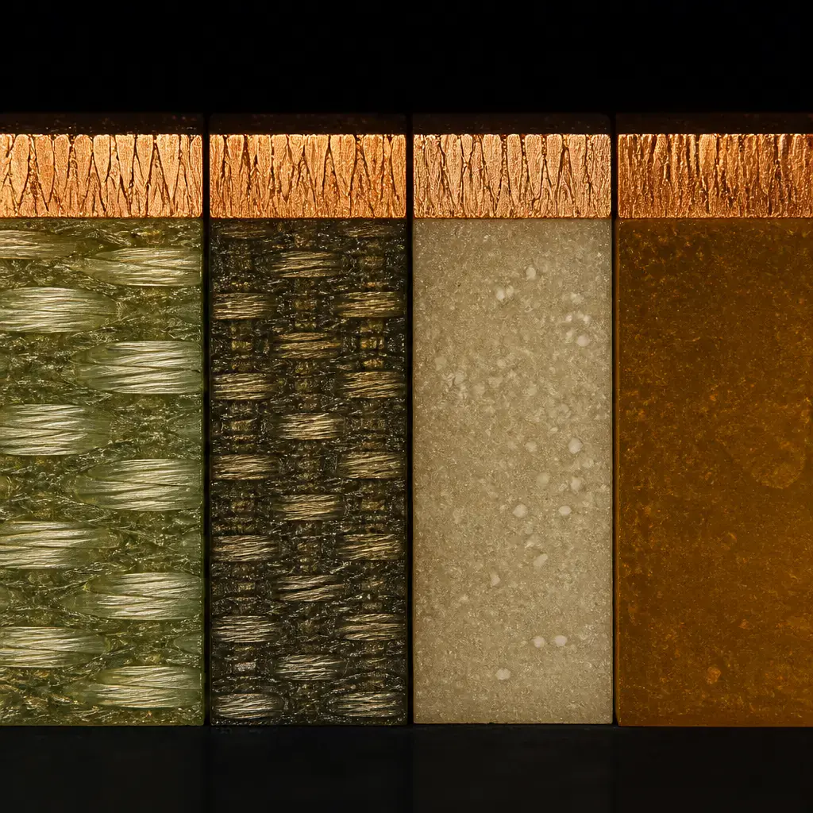

The laminate substrate is the single most consequential material decision in PCB design — it defines your board's maximum operating temperature, high-frequency signal loss, high-voltage tracking resistance, and long-term reliability under thermal cycling. Choosing the wrong laminate can cause delamination during reflow, CAF (conductive anodic filament) failure after months in the field, or unacceptable insertion loss at 5G frequencies. Choosing the right one — and qualifying it with your fabricator before tape-out — eliminates an entire class of latent reliability risks.
At Huaxing PCBA, we stock and process the full spectrum of PCB laminates: standard FR-4 (IT-158, S1141), high-Tg FR-4 (Isola 370HR, Shengyi S1000-2), polyimide for extreme environments, Rogers 4350B/4003C for RF/microwave, and Panasonic Megtron 6 for high-speed digital. Our engineering team provides pre-production laminate consultation to match your dielectric requirements to available material inventory, avoiding the 6-8 week lead times that specialty materials can incur when ordered after design finalization.
Laminate Properties That Matter
Every PCB laminate datasheet lists a dozen parameters. Six of them directly control reliability and performance in the field. Understanding what each parameter means — and what happens when you exceed its limits — is the difference between a design that works on the bench and one that survives 10 years in a car engine compartment.
Tg — Glass Transition Temperature
The temperature at which the resin matrix transitions from a rigid, glassy state to a softer, rubbery state. Above Tg, the material's coefficient of thermal expansion (CTE) increases dramatically — often 3-5x the sub-Tg value — and mechanical strength drops. Every time your board cycles through Tg during soldering or operation, the Z-axis expansion stresses plated through-hole (PTH) barrels. Standard FR-4 (Tg 130°C) can survive 3-5 reflow cycles; polyimide (Tg 250°C) can survive 20+. Rule of thumb: Tg should exceed your maximum operating temperature by at least 30°C, and for lead-free assembly (peak reflow ~245-260°C), a minimum Tg of 150°C is strongly recommended.
Td — Decomposition Temperature
Td (typically measured at 5% weight loss by TGA) is the temperature at which the resin system begins to chemically decompose — not just soften, but break down irreversibly. While Tg defines the reversible softening point, Td defines the point of no return. A laminate with high Tg but low Td is a trap: it remains rigid until it suddenly degrades. For lead-free assembly, look for Td ≥ 325°C. Polyimide and Rogers materials typically achieve Td values above 380°C, giving them a much wider safe processing window than standard FR-4 (Td ~310°C).
CTE — Coefficient of Thermal Expansion (Z-Axis)
Z-axis CTE measures how much the laminate expands vertically with temperature, expressed as either ppm/°C or as a percentage expansion from 50°C to 260°C. This is the property that kills plated through-holes. When the laminate expands more than the copper barrel can stretch, the barrel cracks — typically at the center of the board where stress concentrates. Standard FR-4 expands 3.5-4.5% over the solder reflow range; high-Tg FR-4 holds this to 2.5-3.5%; polyimide and Rogers materials keep it below 3.0%. For designs with high layer counts (≥12 layers), large board dimensions (>200mm), or thick copper (≥2oz), low Z-CTE is non-negotiable.
Dk / Df — Dielectric Constant & Dissipation Factor
Dk (relative permittivity, εr) determines signal propagation velocity; Df (loss tangent, tanδ) determines how much signal energy is converted to heat per unit length. At low frequencies (<1 GHz), standard FR-4 (Dk ~4.2-4.6, Df ~0.020) is acceptable. At 10 GHz and above, Df dominates insertion loss — switching from standard FR-4 (Df 0.020) to Megtron 6 (Df 0.002) reduces dielectric loss by a factor of 10. For 5G NR FR2 (28 GHz, 39 GHz), laminates like Rogers 4350B (Dk 3.48±0.05, Df 0.0037) or Isola Astra MT77 (Dk 3.0, Df 0.0017) are mandatory. Also critical: Dk stability across temperature and frequency. Rogers materials specify Dk tolerance of ±0.05, compared to ±0.2-0.3 for standard FR-4 — this consistency is what enables predictable impedance control in RF designs.
CTI — Comparative Tracking Index
CTI measures a laminate's resistance to electrical tracking — the formation of a conductive carbon path across the surface under high voltage and contamination. Higher CTI = better resistance to surface breakdown. Standard FR-4 typically falls in PLC 3 (CTI 175-249V); high-quality materials like Isola 370HR achieve PLC 0 (CTI ≥ 600V). CTI matters critically in high-voltage designs (power supplies, inverters, EV traction systems) and in high-humidity environments where condensation can form across creepage paths. For designs operating above 250V or requiring reinforced insulation per IEC 62368-1 or IEC 60601-1 (medical), specifying a laminate with CTI ≥ 400V is a safety requirement, not just a reliability improvement.
CAF Resistance — Conductive Anodic Filament
CAF is an electrochemical failure mechanism in which copper ions migrate along the glass-resin interface under DC bias, humidity, and temperature, eventually forming a conductive filament that shorts adjacent vias or traces. CAF failure is insidious: a board can pass electrical test at time-zero and fail 300 hours later in the field. CAF resistance is measured in hours-to-failure under accelerated conditions (typically 85°C/85% RH with 50-100V DC bias). Standard FR-4 with poor glass-to-resin bonding may fail in 200-500 hours; high-Tg FR-4 with optimized glass finishes achieves 500-1000 hours; polyimide typically exceeds 1000 hours. For automotive (under-hood), aerospace, and any design with <0.3mm via-to-via spacing, specify a laminate with proven CAF resistance data from your fabricator.
Laminate Comparison: Six Materials Side by Side
The table below compares six widely-used PCB laminate families across the properties that drive real-world reliability. Costs are expressed relative to standard FR-4. Note that material cost is only part of the picture — processing difficulty, minimum order quantities, and lead times vary significantly. A Rogers 4350B board may cost 6x the material, but the total fabricated board cost premium is typically 2-4x due to the lower layer counts RF designs often require.
| Property | FR-4 Standard | High-Tg FR-4 | Polyimide | Rogers 4350B | Megtron 6 | Isola Astra |
|---|---|---|---|---|---|---|
| Example Part Numbers | Shengyi S1141, ITEQ IT-158 | Isola 370HR, Shengyi S1000-2 | DuPont Pyralux AP, Arlon 85N | Rogers RO4350B | Panasonic R-5775 | Isola Astra MT77 |
| Tg (°C) | 130–140 | 170–180 | 250–260 | >280 | 185–190 | 200–210 |
| Td @ 5% (°C) | 310–320 | 340–350 | 380–400 | 390 | 360–370 | 360–370 |
| Dk @ 10 GHz | 4.2–4.6 | 3.8–4.2 | 3.6–4.0 | 3.48 ±0.05 | 3.6–3.7 | 3.0–3.2 |
| Df @ 10 GHz | 0.020–0.025 | 0.018–0.022 | 0.012–0.018 | 0.0037 | 0.002–0.004 | 0.0017–0.0020 |
| Z-CTE, 50–260°C (%) | 3.5–4.5 | 2.5–3.5 | 2.0–3.0 | 2.5–3.5 | 2.0–3.0 | 2.0–3.0 |
| CTI (V) | 175–225 | 400–600 | 400–600 | 200–250 | 175–200 | 400–500 |
| CAF Resistance (hrs) | 200–500 | 500–1000 | 1000+ | 500–800 | 800+ | 800+ |
| Relative Material Cost | 1x (baseline) | 1.2–1.5x | 3–5x | 5–8x | 3–5x | 4–6x |
| Lead-free Reflow Capable | Marginal | ✓ Yes | ✓ Yes | ✓ Yes | ✓ Yes | ✓ Yes |
| Best Applications | Consumer electronics, single-sided/double-sided, low-layer-count, cost-sensitive | Industrial controls, automotive (cabin), power supplies, ≥6-layer boards | Downhole drilling, military/aerospace, high-reliability flex, chip-on-board | RF/microwave, antennas, power amplifiers, couplers, satellite comms | High-speed digital, 5G sub-6 GHz, 100G/400G networking, servers | 5G mmWave (28/39 GHz), satellite, aerospace, ultra-low-loss digital |

Laminate Selection Decision Guide
The right laminate depends on three factors: operating environment (temperature, humidity, vibration), electrical requirements (frequency, voltage, impedance tolerance), and budget. Use the decision cards below as a starting point — then engage with your fabricator's engineering team to validate against their specific material inventory and process capabilities.
Cost-sensitive consumer products with benign environments
Best for consumer gadgets, LED lighting, simple IoT devices, keyboards, and single-board hobbyist projects. Operating temperature under 100°C, no high-speed signals above 1 GHz, maximum 4-6 layers. Acceptable for tin-lead reflow; marginal for lead-free reflow with thick boards. Not recommended for automotive, outdoor, or any application requiring >500-hour service life under thermal cycling. Common part numbers: Shengyi S1141, Kingboard KB-6160, ITEQ IT-158.
Industrial, automotive cabin, and general-purpose multilayer designs
The workhorse material for professional electronics. Handles lead-free reflow with margin, supports 6-20+ layers, and provides adequate CAF resistance for most non-automotive-under-hood applications. Tg 170-180°C gives comfortable headroom above 105°C-rated operating environments. Use for industrial PLCs, EV chargers (cabin side), telecom infrastructure, and general embedded systems. Common part numbers: Isola 370HR, Shengyi S1000-2, EMC EM-827, ITEQ IT-180A. CTI of 400-600V on 370HR makes it suitable for high-voltage power supply designs.
RF/microwave (Rogers) or high-speed digital (Megtron) with tight Dk tolerance
For designs where insertion loss at GHz frequencies is the dominant constraint. Rogers 4350B provides Dk 3.48±0.05 — the tightest tolerance in the industry — making it the reference standard for microstrip filters, patch antennas, and RF power dividers where impedance accuracy is critical. Panasonic Megtron 6 (R-5775) offers the lowest Df in its class (0.002 at 1 GHz) for high-speed digital backplanes and 100G/400G line cards. Both materials are available with reverse-treated (RT) copper foil for further loss reduction. Hybrid construction (Rogers RF layer + FR-4 digital layer in a single lamination) is a standard Huaxing process — combine high-frequency performance with cost-effective digital routing.
Downhole, aerospace, military, and high-temperature flex applications
When the application environment exceeds 200°C — think oil & gas downhole tools (175-225°C operating), jet engine sensor housings, or military ordnance electronics — polyimide is the only viable organic substrate. Tg above 250°C, Td above 380°C, and Z-CTE typically below 3.0% ensure PTH integrity through repeated extreme-temperature cycles. Also the default choice for flexible circuits (DuPont Pyralux AP, Panasonic Felios) where the laminate must bend, not just survive heat. Cost is 3-5x FR-4, but in these applications there is no alternative that works. Common part numbers: DuPont Pyralux AP, Arlon 85N, Isola P95.
Glass Weave Styles & Their Impact on Signal Integrity
PCB laminate is not a homogeneous material — it is glass fabric impregnated with resin. The glass weave pattern creates a non-uniform dielectric that matters once your signal wavelength becomes comparable to the weave dimensions. At multi-gigabit data rates, the weave effect can cause skew within differential pairs, periodic impedance variations, and deterministic jitter that no amount of signal conditioning can fully compensate.
Common glass styles and when they matter:
- 106 (50µm thickness): Fine weave, tight glass bundles, best dielectric uniformity. Preferred for high-speed layers carrying >10 Gbps signals. Small resin-rich windows between bundles minimize Dk variation. Standard choice for thin prepreg layers in HDI and high-layer-count designs.
- 1080 (64µm thickness): Medium weave, good balance of thickness and uniformity. Acceptable for signals up to ~10 Gbps. More resin-rich area than 106, which increases the effective Dk variation across a trace — at 25 Gbps, a trace running over a glass bundle vs. a resin window can see ΔDk of 0.2-0.4, causing measurable impedance ripple.
- 2116 (115µm thickness): Coarse weave, large glass bundles, significant resin-rich windows. Suitable for power/ground planes and low-speed digital layers. At >5 Gbps, the weave effect is pronounced — differential skew can exceed 5 ps/inch, enough to close the eye diagram at 25 Gbps NRZ. Never use 2116 on high-speed signal layers.
- 7628 (180µm thickness): Very coarse weave, the workhorse for thick core layers. Use for mechanical strength in the core, not near high-speed signals. At >1 GHz, the periodic impedance variation is obvious on a TDR trace. Spread glass variants (e.g., 7628 spread weave) mitigate the effect somewhat by flattening the bundle profile.
- Spread glass / flat glass variants: Mechanically flattened glass bundles that reduce the thickness variation between bundle and resin region. Available in 1067 spread, 1086 spread, and similar styles. For 56 Gbps PAM4 and above, spread glass is recommended to minimize the weave-induced skew and impedance ripple that can degrade the signal-to-noise ratio (SNR) of PAM4 modulation.
Practical guidance: If your design includes 25 Gbps or faster channels, ask your fabricator what glass style is used on the signal layers. Specify 106 or spread-glass prepreg on those layers in your stackup drawing. The cost delta is minimal — typically under 5% of the bare-board cost — and the signal integrity improvement can be the difference between a passing and failing compliance test.
Halogen-Free & Environmental Compliance
Halogen-free laminates have transitioned from a niche environmental requirement to a mainstream specification — driven by EU RoHS recast, IEC 61249-2-21, and major OEM green procurement policies. A laminate is considered halogen-free when it contains less than 900 ppm chlorine, 900 ppm bromine, and 1500 ppm total halogens (Cl + Br). Traditional FR-4 uses brominated epoxy as the flame retardant; halogen-free laminates substitute phosphorus-based or metal-hydrate flame retardant systems.
Key considerations when specifying halogen-free:
- Performance parity: Modern halogen-free High-Tg FR-4 (e.g., Shengyi S1155, ITEQ IT-170GRA1) matches brominated FR-4 on Tg, Td, and CAF resistance. The gap that existed 15 years ago is closed. Do not accept reduced reliability as a trade-off for halogen-free — materials exist that meet both requirements.
- Processing behavior: Halogen-free laminates typically have slightly higher resin flow during lamination and may require adjusted press parameters. A fabricator experienced with halogen-free materials will compensate; fabricators only running standard FR-4 may see increased resin squeeze-out and thickness variation.
- UL 94 V-0 compliance: All halogen-free materials we stock maintain V-0 flammability rating. The phosphorus-based flame retardant system achieves this through char formation during combustion — a different mechanism from bromine, but equally effective when the resin system is properly formulated.
At Huaxing, we process halogen-free laminates as a standard option — not a special-order item. Shengyi S1155 (Tg 170°C, halogen-free) and ITEQ IT-170GRA1 (Tg 175°C, halogen-free) are in regular production inventory. Specify "halogen-free per IEC 61249-2-21" on your fabrication drawing if your end product requires compliance.
Huaxing Laminate Capabilities & Inventory
We maintain active inventory of all major laminate types to avoid the 6-8 week lead times that can stall a project when specialty materials are ordered after design lock. Our engineering team reviews laminate selection with every new design — matching your dielectric requirements to in-stock materials, identifying potential single-source risks, and proposing equivalent alternatives when a specified material would add lead time without a performance benefit.
| Huaxing Production Laminate Capabilities | |
|---|---|
| Standard FR-4 | ITEQ IT-158, Shengyi S1141, Kingboard KB-6160 — Tg 130-140°C, stocked in 0.2-3.2mm thicknesses. Covers all consumer and general-purpose PCB orders. |
| High-Tg FR-4 | Isola 370HR (Tg 180°C, CTI 600V), Shengyi S1000-2 (Tg 175°C), ITEQ IT-180A (Tg 180°C), EMC EM-827 (Tg 170°C). The default material class for all multilayer and industrial orders. 370HR is our preferred recommendation for PSU and high-voltage designs due to best-in-class CTI. |
| Polyimide | DuPont Pyralux AP, Arlon 85N, Shengyi SP130i — stocked for rigid and rigid-flex. Tg 250°C+, qualified for 20+ thermal cycles. Typical applications: military/aerospace rigid-flex, downhole instrumentation, high-temp sensor PCBs. |
| Rogers (RF/Microwave) | RO4350B (Dk 3.48), RO4003C (Dk 3.38), RO4835 (Dk 3.45, oxidation-resistant). Stocked in 0.101mm, 0.168mm, 0.254mm, 0.508mm, 0.762mm core thicknesses. For 5G NR FR1/FR2 antenna boards and millimeter-wave radar (76-81 GHz). |
| Megtron 6 (High-Speed) | Panasonic R-5775 (Megtron 6), available in 0.05-1.6mm. Sub-0.1mm cores for high-layer-count backplanes. Specified for 56Gbps PAM4 and 112Gbps PAM4 channel designs. |
| Isola Astra (Ultra-Low-Loss) | Isola Astra MT77 (Dk 3.0, Df 0.0017) — the lowest-loss laminate in our inventory for 5G mmWave (28/39 GHz) and low-earth-orbit satellite communication payloads. |
| Hybrid Construction | Rogers + FR-4 mixed in a single lamination cycle. Rogers layers carry RF signals with controlled Dk/Df; FR-4 layers handle power distribution and digital control at lower cost. Our engineering team designs the layer stack to ensure CTE compatibility between material types — mismatched CTE causes warpage during reflow if not accounted for in the stackup. Standard process: Rogers prepreg bonds to FR-4 core via 1080 or 2116 glass-style bonding layers. |
| Copper Foil Types | Standard ED (electrodeposited), RTF (reverse-treated), RA (rolled-annealed for flex), and HVLP (hyper-very-low-profile) available across all laminate types. HVLP foil (Rz < 2μm) recommended for >25GHz designs to reduce conductor-loss contribution from skin effect. |
| Quality Verification | Tg/Td verification by DSC/TGA on incoming material lots. Dk/Df test coupon per IPC-TM-650 2.5.5.9 on RF material shipments. Cross-section micrograph on first-article for every new laminate type. IST (interconnect stress test) reliability coupon per IPC-TM-650 2.6.26 on every production lot for designs with ≥8 layers. |
Industries That Drive Laminate Choice
Material selection is never one-size-fits-all — it is driven by the specific environmental and regulatory demands of the end application. Below is how four key industries map to laminate requirements, and what happens when those requirements are not met.
Special Topic: Hybrid Laminate Construction
Not every design needs exotic materials on every layer. In RF modules, antenna arrays, and mixed-signal systems, the RF path may require Rogers 4350B while the digital control and power distribution layers can use standard High-Tg FR-4 at a fraction of the cost. Hybrid construction — bonding dissimilar materials in a single lamination press cycle — is a standard process at Huaxing and can reduce bare-board cost by 30-50% compared to an all-Rogers stackup.
The engineering challenge is CTE compatibility. Rogers 4350B has a CTE of approximately 14-16 ppm/°C in X/Y; FR-4 is typically 12-14 ppm/°C. The difference is small enough that symmetric stackup design prevents warpage, but the layer arrangement must be planned with the fabricator before tape-out. Key rule: always maintain symmetry about the centerline. If layer 1 is Rogers, layer N (bottom) must also be Rogers — even if it carries no RF signals. A Rogers core on top bonded to an FR-4 core below with matching-prepreg layers is the most common and reliable hybrid architecture.
How to Specify Laminate on Your Fabrication Drawing
Avoid ambiguity. "FR-4" alone is meaningless — it could be standard (Tg 130) or high-Tg (Tg 180), halogen-free or brominated, phenolic-cured or dicy-cured, any of a dozen glass styles. At minimum, your fab drawing or notes should specify:
- Laminate brand and grade: e.g., "Isola 370HR" or "Shengyi S1000-2" — not just "High-Tg FR-4"
- Tg requirement: e.g., "Tg ≥ 170°C by DSC" — with the test method called out (DSC vs. TMA gives different values for the same material)
- Dk/Df requirement: e.g., "Dk 3.48 ±0.05, Df ≤ 0.004 at 10 GHz per IPC-TM-650 2.5.5.5" — frequency and test method matter
- CTI requirement: e.g., "CTI ≥ 400V per IEC 60112" — only if high-voltage or safety insulation is a factor
- Flammability: e.g., "V-0 per UL 94" — standard for most laminates, but confirm if your design requires a specific UL file number
- Acceptable alternatives: e.g., "Or equivalent with prior approval from customer" — gives the fabricator flexibility to substitute when a material is on allocation
For RF designs, additionally specify the copper foil type (ED, RTF, RA, HVLP), because at frequencies above 10 GHz, conductor surface roughness contributes a significant fraction of insertion loss — often 20-30% of total loss at 28 GHz, even with low-loss laminate.
Thermal Conductivity: The Often-Overlooked Parameter
For power electronics — motor drives, LED arrays, RF power amplifiers — thermal conductivity of the dielectric determines how effectively heat moves from copper planes to the board surface, and ultimately to the heatsink. Standard FR-4 has a thermal conductivity of approximately 0.3-0.4 W/m·K. This is poor — it acts as a thermal insulator. High-Tg FR-4 with ceramic fillers can reach 0.6-0.8 W/m·K. For applications where board-level heat transfer is critical, consider thermally conductive laminates such as Bergquist (Henkel) HT-04503 (1.0 W/m·K) or insulated metal substrate (IMS) construction with a bonded aluminum or copper baseplate. Rogers 4350B (0.69 W/m·K) offers roughly 2x the through-plane thermal conductivity of standard FR-4 — a secondary benefit beyond its RF performance that reduces hot-spot temperatures in high-power RF designs.
Further Reading
- PCB Materials Guide: How to Choose the Right Laminate for Your Application — comprehensive educational article covering material selection methodology, cost trade-offs, and case studies from consumer and automotive designs
- HDI PCB Technology: The Complete Guide — how microvia reliability interacts with laminate choice, and why high-Tg materials are mandatory for 3+N+3 stackups
- PCB Stackup Design Guide — impedance control, layer arrangement, and the interaction between laminate Dk and trace geometry for controlled-impedance designs
- HDI & Any-Layer Interconnect — density-driven PCB architectures; laminate selection for microvia reliability in sequential lamination